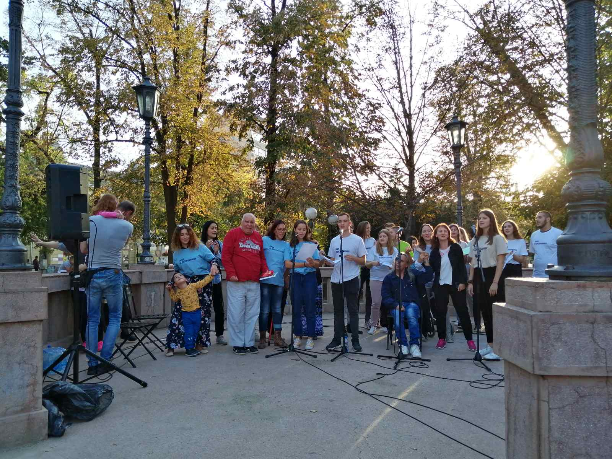
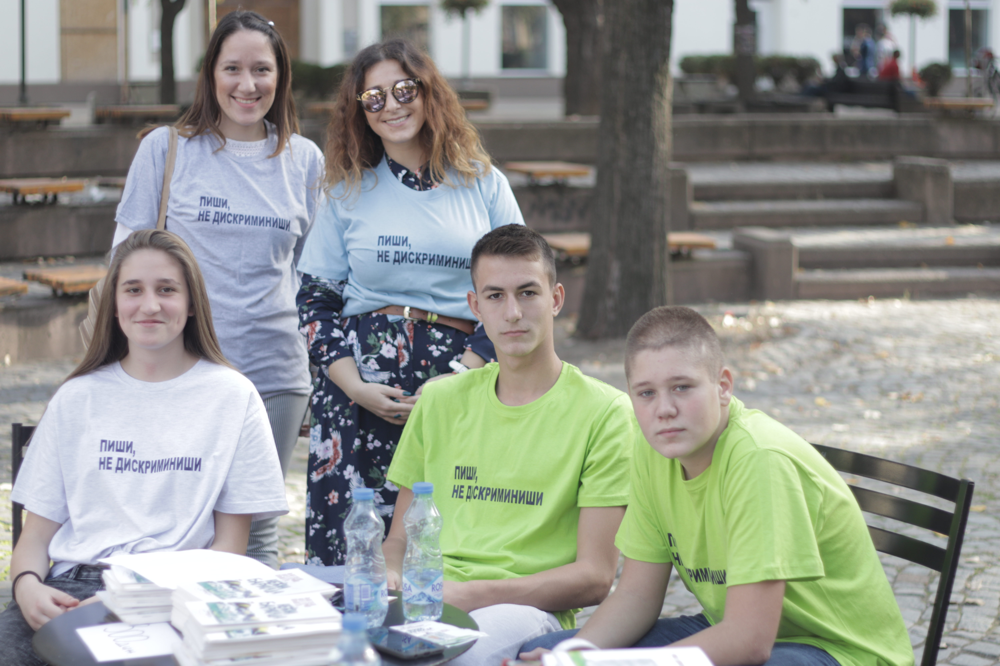
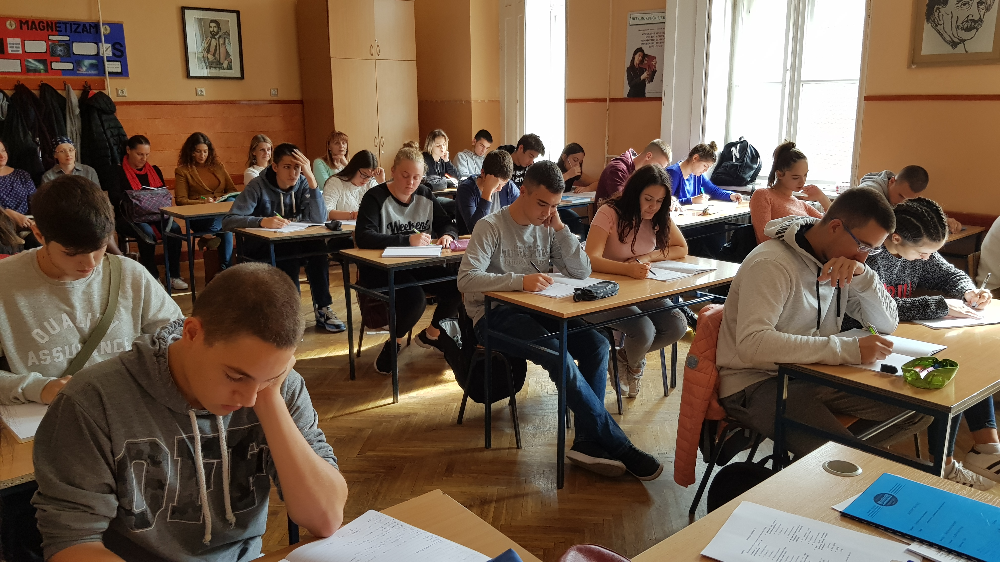
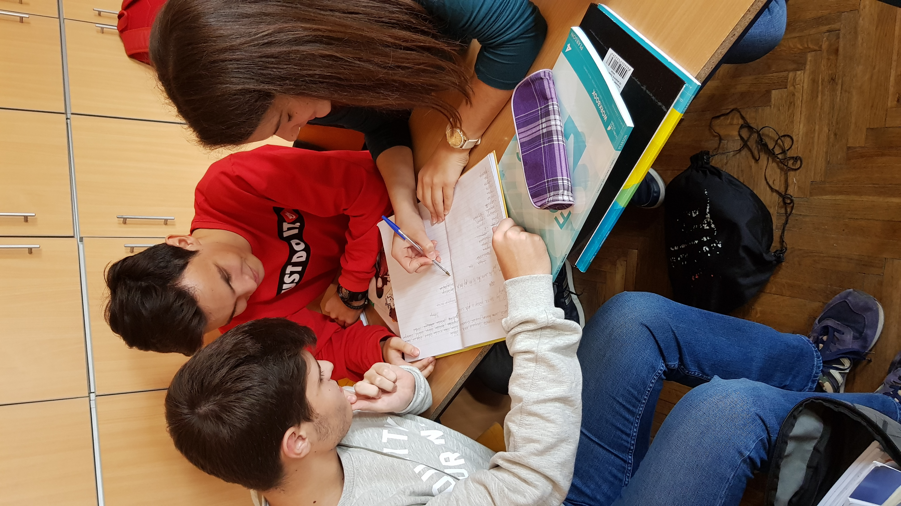
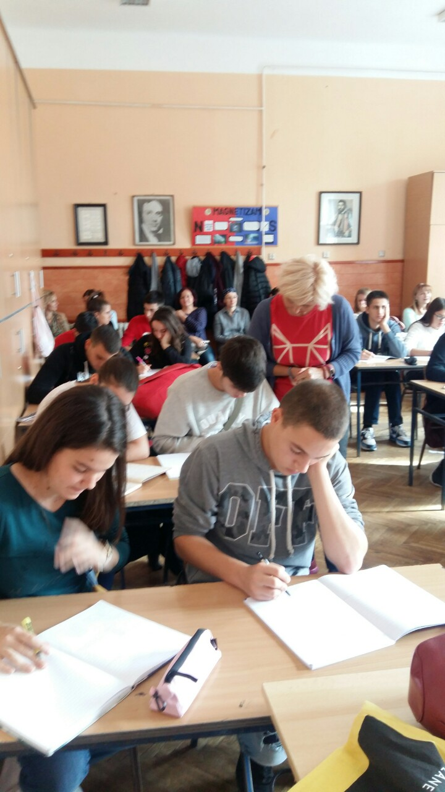
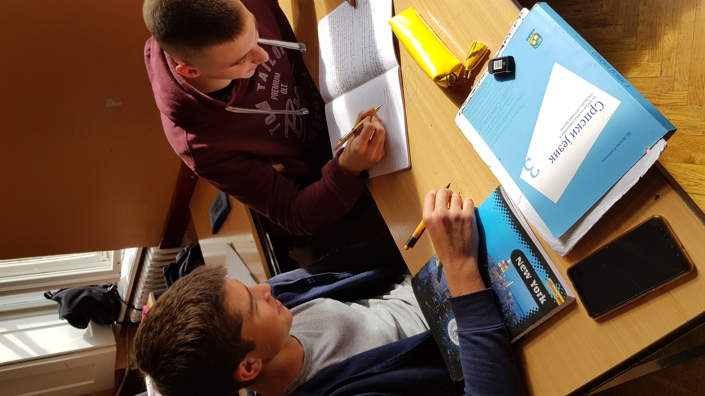
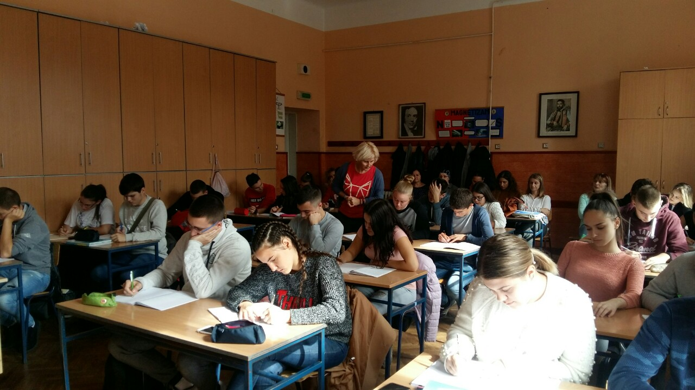
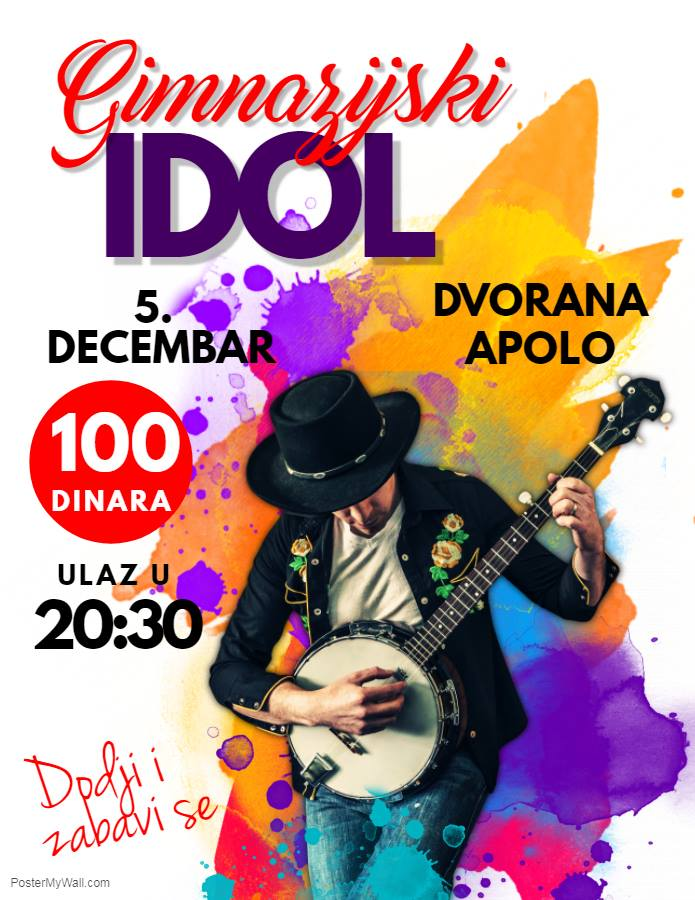

{kind=link}
{kind=link}
Распоред пријема првака!
Поштовани родитељи и ђаци овде можете пронаћи распоред пријема ђака у први разред. Пријем ће се обавити 31.08.2020. у време назначено у распореду.
Напомена: Ученици морају да поштују све епидемиолошке мере. Обавезна је дезинфекција руку на уласку у школу, ношење маске и поштовање социјалне дистанце.
Заразно - нови часопис ученика наше школе!
Часопис Заразно настао је током online наставе, наши ђаци саставили су текстове о Гимназији у Панчеву и решили да на часовима предмета Језик медији и култура створе електронски часопис у ком би приказали колики је значај наше школе и колико је културних садржаја управо у њој настало. Такође, једна од идеја била је да се скрене пажња са пандемије и да се окренемо култури и уметности. Први број часописа можете преузети овде.
Потребна документа за упис у први разред 2020/21
Поштовани, о потребним документима и сатници за упис у први разред 2020/21 можете сазнати више овде.
Потребна документа за упис у први разред 2020/21
Поштовани, о потребним документима и сатници за упис у први разред 2020/21 можете сазнати више овде.
Прелиминарни резултати пријемног за ИТ одељење - ПАНЧЕВО
Поштовани, прелиминарне резултате пријемнг за ИТ одељење можете погледати овде.
Обавештење
Обавештавамо ученике који су се пријавили у нашој школи за полагање пријемног за ИТ одељење да је ПРИЈЕМНИ ИСПИТ У ЗРЕЊАНИНСКОЈ ГИМНАЗИЈИ, среда, 10.6.2020. са почетком у 10:00. Пријемни испит траје од 10:00-14:00. Ученици су дужни да на пријемни испит стигну у школу у којој полажу пријемни испит најкасније у 9:15.
Више о томе, као и о прибору који је потребно понети, можете прочитати овде.
ИТ смер - пријемни
Обавештење: пријављивање за ИТ одељење
Пријава за полагање пријемног испита
Више о самом смеру можете сазнати овде
Радно време и ванредни/допунски испити
Поштовани ђаци и родитељи школа ће бити отворена сваког радног дана од 9 до 13 часова.
Ученици који треба да пријаве ванредне испите или допунске испите то могу да ураде слањем мејла на pomocnik@gimnazijaurospredic.edu.rs и direktor@gimnazijaurospredic.edu.rs(послати на оба мејла!).
Испити би требало да крену почетком јуна.
Пријемни испит
Више о пријављивању ученика за полагање пријемног испита за упис у школе за ученике са посебним способностима за школску 2020/2021. годину можете пронаћи на овом линку.
Почела настава на даљину
Поштовани ђаци и родитељи почела је настава на даљину. На следећим линковима се можете детаљније информисати о истој.
Допис директорима основних и средњих школа
У складу са здравственим препорукама које установе примењују ради спречавања ширења инфекција, на овом линку су смернице којих се треба приджавати.
Организовање екскурзије за ученике завршног разреда Гимназије за школску 2019/2020
Расписан је позив за подношење понуда за организовање екскурзије за ученике завршног разреда Гимназије за школску 2019/2020. годину.
Више о теми, као и документацију можете пронаћи овде.
Друга омладинска мировна конференција-прављење Скулптуре мира у Нирнбергу, Немачка
На „Другој омладинској мировној конференцији“ одржаној у Нирнбергу од 17. до 20. октобра учествовала је и делегација панчевачке гимназије „ Урош Предић“. Главна идеја пројекта била је ширење свести о миру у свету, која је овековечена прављењем „Скулптуре мира“ од пластичног оружја које је свака делегација донела у Нирнберг.
Више о пројекту можете прочитати овде.
Школски биолошки електронски часопис!
Пред вама се налази први број Школског биолошког двојезичног електронског часописа Гимназије „Урош Предић” у Панчеву.
Искрено се надамo, да ћете читајући ове стране, сазнати нешто ново, подсетити се наученог, и да ће се у вама пробудити нове идеје.
Више о теми можете погледати овде, или у делу Ученици/Секције/Школски часопис.
Права и обавезе ученика
Поштованe колеге, ђаци и родитељи документ о правима и обавезама ученика за школску 2019-2020. годину можете преузети овде, или у секцији Ученици/Права и обавезе
Акција ђака Гимназије „Нежна барикада“
У понедељак 14.октобра 2019. године у центру града одржаo се догађај „Нежна барикада“ по плану ученичке акције „Пиши, не дискриминиши“ у склопу пројекта „Борба против дискриминације деце и одраслих из осетљивих група“. Гост догађаја био је песник Иштван Месарош, корисник дома „Збрињавање“. Уз песму, глуму, осмех и добро расположење ученици су подсетили публику шта су људска права и како сви заједно треба да се боримо за њих, као и да спречавамо сваки вид дискриминације кад год смо у могућности.
Ученици учесници акције су: Илић Сара, Папулић Душан, Петровић Милош, Тисевски Анђела, Николић Милош, Мојсиловић Ана, Дакић Александар, Николић Ина, Обрадовић Софија, Атанацков Ања, Несторовић Марко, Брнгар Марина, Вучковић Маша, Филиповић Михајло, Оберкнежев Матеја, Стојић Данило, Дадић Исидора, Димитријев Сташа и Иглежђа Сања (ученица Медицинске школе „Стевица Јовановић“).
Тим професора Гимназије који учествују у пројекту су : Паталов Силвија, Тодоровић Тамара, Љубичић Даница, Лазић Снежана и Драгосављевић Елена.

Обележен Дан интелигенције
У оквиру обележавања Дана интелигенције у Гимназији „Урош Предић“ одржане су Језичке игре као угледни час Српског језика и књижевности проф. Валентине Паровић у 3/8. Овај догађај ушао је у Менсин календар обележавања Дана интелигенције.
Ученици су кроз разноврсне језичке игре показали своја знања и вештине сналажења у новим и другачијим задацима. Подстицани су да слободно користе деривационе моделе и начине нове речи.
По завршетку часа ученици су попунили евалуациони упитник који је показао велико задовољство у раду (просечна оцена 4,83). Сви учесници су написали да би волели да се овакви часови понове.
Језичким играма су присуствовали професори различитих предмета (7), директорка и стручни сарадник – психолошкиња.
    {kind=link}
{kind=link}
{kind=link}
{kind=link}
Изабрани уџбеници за школску 2019-2020. годину
Поштовани ђаци обновљен је списак уџбеника за школску 2019-2020. годину. Нови списак уџбеника можете пронаћи овде.
Изабрани уџбеници за школску 2019-2020. годину
Поштовани ђаци обновљен је списак уџбеника за школску 2019-2020. годину. Нови списак уџбеника можете пронаћи овде.
НАПОМЕНА: списак уџбеника за други разред биће објављен у наредних десет дана.
Упис у први разред 2019/20
Потребна документа су за упис у први разред 2019/20:
- Попуњен образац пријаве за упис у средњу школу
- Сведочанство о завршеној основној школи
- Уверење о положеном завршном испиту
- Фотографија (за ђачку књижицу)
Напоменe:
- пријава за упис се добија и попуњава у школи
- родитељи нису у обавези да доставе извод из матичне књиге рођених
- на упису је неопходно присуство родитеља
IT смер - Резултати
Резултате пријемног испита за IT одељење одржаног 02.06.2019. можете погледати овде.
IT смер - пријемни
Пријемни испит за IT одељење одржаће се 02.06.2019. од 10-12ч. У зрењанинској гимназији треба бити најкасније у 9:15. Са собом понети ђачку књижицу са овереном сликом и уписаним идентификационим бројем који сте добили у основној школи. Понети прибор-шестар, лењир, угломер, троугао, обичну и хемијску оловку, калкулатор. Мобилни телефон строго забрањен!
Додатне информације се налазе на сајту зрењанинске гимназије.
ИНТЕРНАЦИОНАЛНА ЕКОЛОШКА КОНФЕРЕНЦИЈА И СТУДИЈСКО ПУТОВАЊЕ
БРЕМЕН 10-13.МАЈ 2019.
Еколошка секција „Гимзелени“ гимназије „Урош Предић“ Панчево пријавила се ове школске године на међународни конкурс који је расписао Goethe-Institut Москва ” Eкологија чини школу” са пројектом „Околина је као стакло, не дозволи да се уништи“.
Од 182 пристигла рада из разних земаља, 11 пројеката је проглашено победницима и награђено путовањем у немачки град Бремен на „ПЕТУ МЕЂУНАРОДНУ ЕКОЛОШКУ КОНФЕРЕНЦИЈУ “. Пројекат Гимзелених је награђен путовањем на конференцију која се оджала у Бремену од 10.маја до 13.маја 2019.
Поред екипе из Србије, своје пројекте представљали су и ученици са наставницима из Русије (Москва, Новосибирск,Саранск), Украјине (Чернигов), Сједињених Америчких Држава (Чикаго), Белорусије (Новополотск), Кине ( Хангзхоу), Јерменије (Јереван), Грузије (Сугдиди), Казахстана ( Актау), Киргистана ( Нарин), Узбекистана ( Ургенч) и Немачке (Бремен).
У тиму панчевачке гимназије “Урош Предић“ и наше државе били су: Валерија Јона Андрејевић –професорка немачког језика, Елена Драгосављевић- професорка хемије, Александра Вукашиновић-ученица трећег разреда, Стефани Нешковић-ученица другог разреда и Борко Вицановић- ученик четвртог разреда.
Више о овој теми може прочитати овде
IT смер!
Пријављивање ученика за полагање пријемног испита за IT одељење је од 10. маја до 17. маја, од 9 до 14 часова у секретаријату гимназије.
Ученици могу преузети образац пријаве са сајта министарства просвете или кликом на линк овде. Образац се може преузети и у секретаријату гимназије. Приликом попуњавања образца није неопходно навести шифру ученика (шифра се добија у матичној школи), али се шифра и ђачка књижица морају обавезно понети на пријемни испит.
Гимназија организује припрему за полагање пријемног испита за IT одељње. Припреме ће се одржати 18.05., 25.05. и 01.06. у учионици број 20 у пердиоду од 10 до 12 часова.
Матурски радови
Упутства за израду и изглед прве стране матурског рада налазе се у секцији Ученици/Матурски рад. Исте можете пронаћи и кликом на линк. Молимо вас да их пажљиво прочитате и придржвате их се током израде вашег рада. За сва додатна питања можете се обратити вашем ментору или неком од професора.
Свечана Академија
Свечана Академија, поводом Дана школе, одржаће се у четвртак, 6.12.2018., у Културном центру са почетком у 17:30. Дођите, и увеличајте наш дан.
Отварање изложбе
Отварање изложбе ликовних радова ученика наше школе одржаће се у четвртак, 6.12.2018., у фоајеу Културног центра са почетком у 16:30.
Гимназијски ИДОЛ
Финално вече Гимназијског идола. У конкуренцији је 15 песама које ће такмичари извести уживо уз пратњу бенда. Дођите да се забавите, подржите своје другаре и гласајте за свог фаворита! Напомена: Карте није могуће купити на улазу у Аполо, само у школи.
Добродошли на сајт гимназије „Урош Предић"
Наш сајт је скоро почео с радом у редизајнираном издању. Израдили су га ученици наше школе, па вас позивамо да погледате њихов труд и надаље користите ово место као извор ваших информација у вези са радом гимназије „Урош Предић".